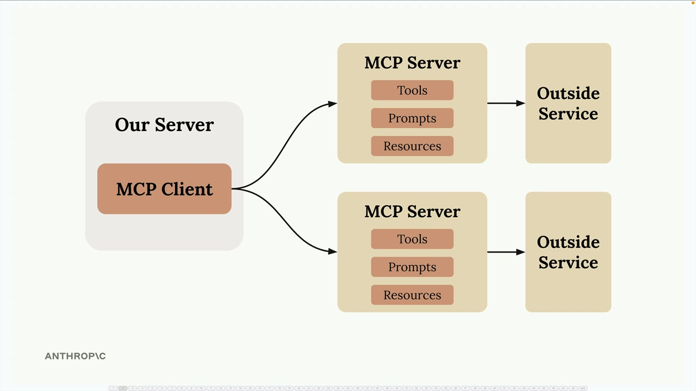
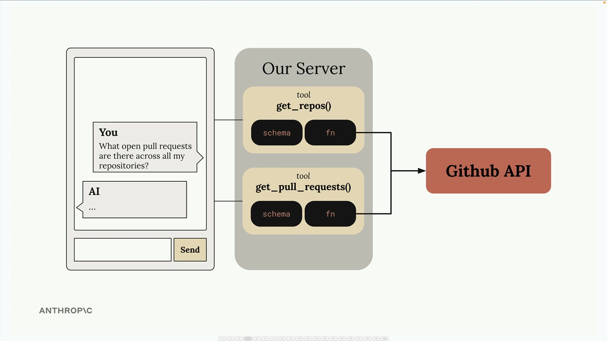
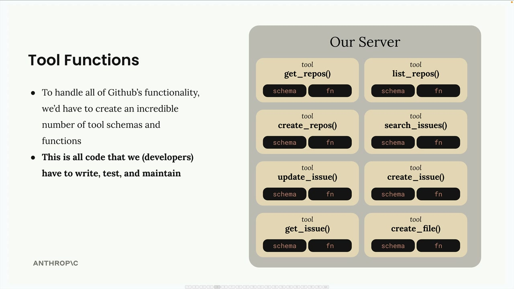
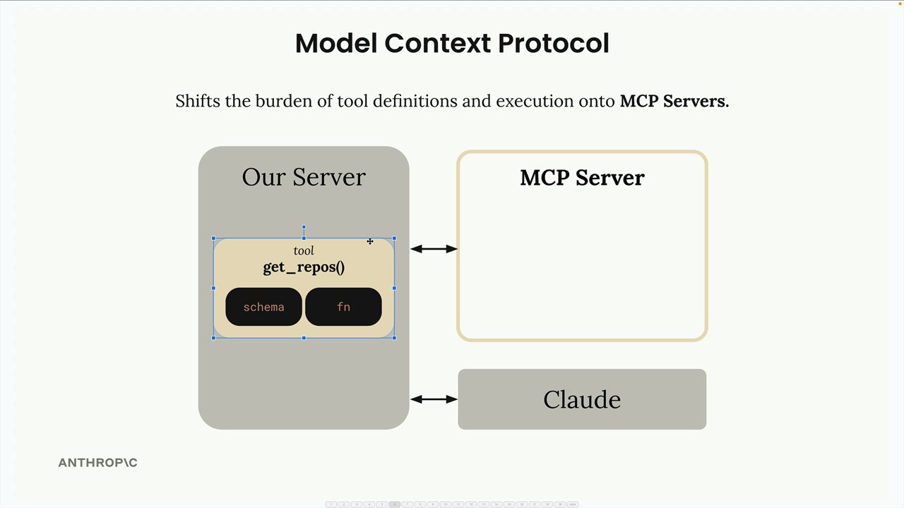
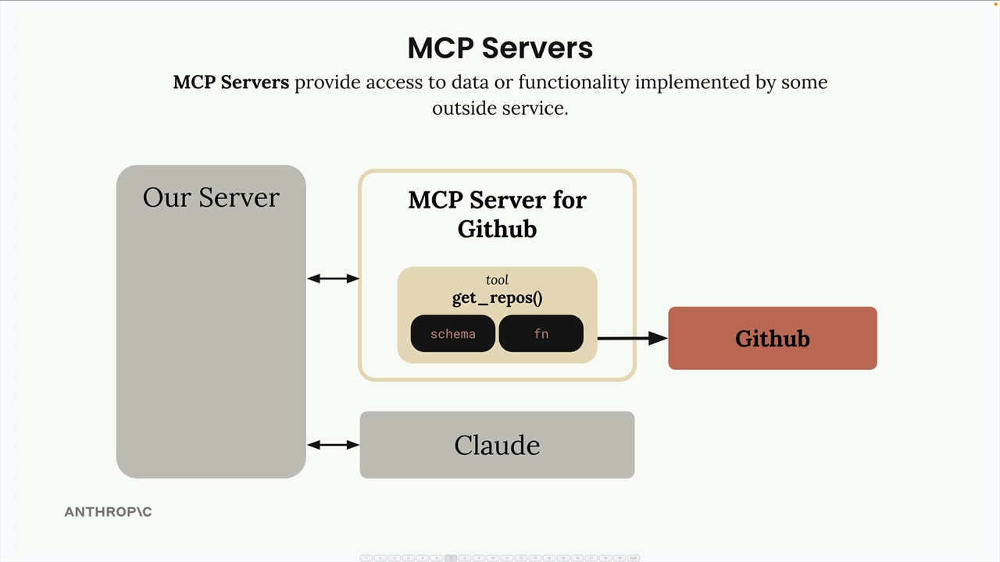
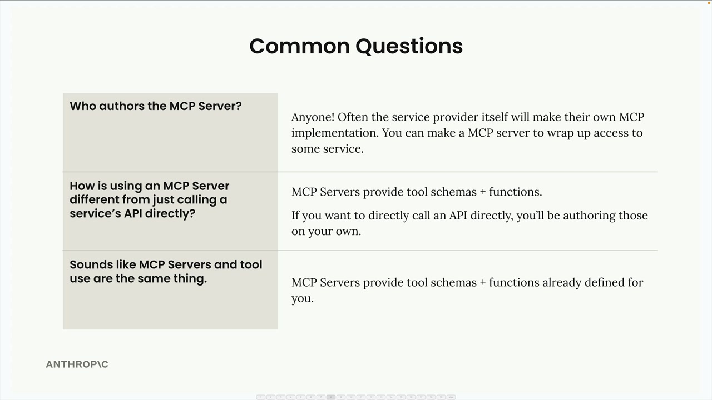

MCP 소개
Model Context Protocol (MCP)는 지루한 통합 코드를 직접 작성하지 않아도 Claude에 컨텍스트와 도구를 제공하는 통신 레이어입니다. 도구 정의와 실행의 부담을 여러분의 서버에서 전문화된 MCP 서버로 옮기는 방법이라고 생각하면 됩니다.

MCP를 처음 접하면 기본 아키텍처를 보여주는 다이어그램을 보게 됩니다. MCP 클라이언트(여러분의 서버)가 도구, 프롬프트, 리소스를 포함한 MCP 서버에 연결되는 구조입니다. 각 MCP 서버는 외부 서비스에 대한 인터페이스 역할을 합니다.
실제 예시로 MCP 이해하기
사용자가 GitHub 데이터에 대해 Claude에게 질문할 수 있는 채팅 인터페이스를 구축한다고 가정해 보겠습니다. 사용자가 "내 모든 저장소에서 열려 있는 풀 리퀘스트가 무엇인가요?"라고 물을 수 있습니다. 이에 답하려면 Claude가 GitHub API에 접근할 수 있는 도구가 필요합니다.

MCP 없이는 GitHub 통합 도구를 모두 직접 만들어야 합니다. 지원하려는 GitHub 기능 하나하나마다 스키마와 함수를 작성해야 한다는 의미입니다.
도구 함수 문제
GitHub에는 저장소, 풀 리퀘스트, 이슈, 프로젝트 등 방대한 기능이 있습니다. 완전한 GitHub 챗봇을 구축하려면 엄청난 수의 도구를 작성해야 합니다.

각 도구에는 스키마 정의와 함수 구현이 모두 필요합니다. 개발자로서 작성하고, 테스트하고, 유지보수해야 할 코드가 매우 많다는 것을 의미합니다.
MCP가 이 문제를 해결하는 방법
MCP는 도구 정의와 실행의 부담을 여러분의 서버에서 MCP 서버로 옮깁니다. GitHub 도구를 직접 작성하는 대신, 전용 MCP 서버 내에서 작성되고 실행됩니다.

MCP 서버는 GitHub 기능을 감싸는 래퍼 역할을 하며, 직접 구현하지 않아도 사용할 수 있는 사전 구축된 도구를 제공합니다.

MCP 서버는 외부 서비스가 구현한 데이터나 기능에 대한 접근을 제공합니다. 복잡한 통합을 어떤 애플리케이션이든 연결할 수 있는 재사용 가능한 컴포넌트로 패키징합니다.
MCP에 대한 자주 묻는 질문

MCP 서버는 누가 만드나요?
누구든지 MCP 서버 구현체를 만들 수 있습니다. 서비스 제공업체 스스로 공식 MCP 구현체를 만드는 경우도 많습니다. 예를 들어 AWS가 자사의 다양한 서비스를 위한 공식 MCP 서버를 출시할 수 있습니다.
MCP는 직접 API 호출과 어떻게 다른가요?
MCP 서버는 이미 정의된 도구 스키마와 함수를 제공합니다. API를 직접 호출하면 그 도구 정의를 직접 작성해야 합니다. MCP는 그 구현 작업을 덜어줍니다.
MCP는 그냥 도구 사용 아닌가요?
이는 흔한 오해입니다. MCP 서버와 도구 사용은 서로 보완적이지만 다른 개념입니다. MCP는 누가 도구를 만들고 유지보수하는 작업을 담당하느냐의 문제입니다. MCP를 사용하면 다른 누군가가 이미 도구 함수와 스키마를 작성해 MCP 서버 안에 패키징해 놓은 것입니다.
핵심은 MCP 서버가 이미 정의된 도구 스키마와 함수를 제공함으로써, 복잡한 통합을 직접 구축하고 유지보수할 필요가 없어진다는 것입니다.